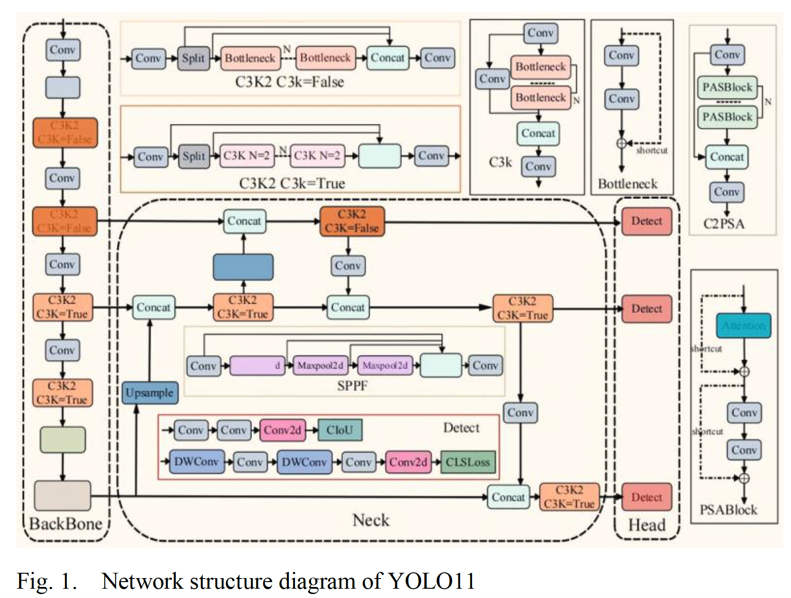
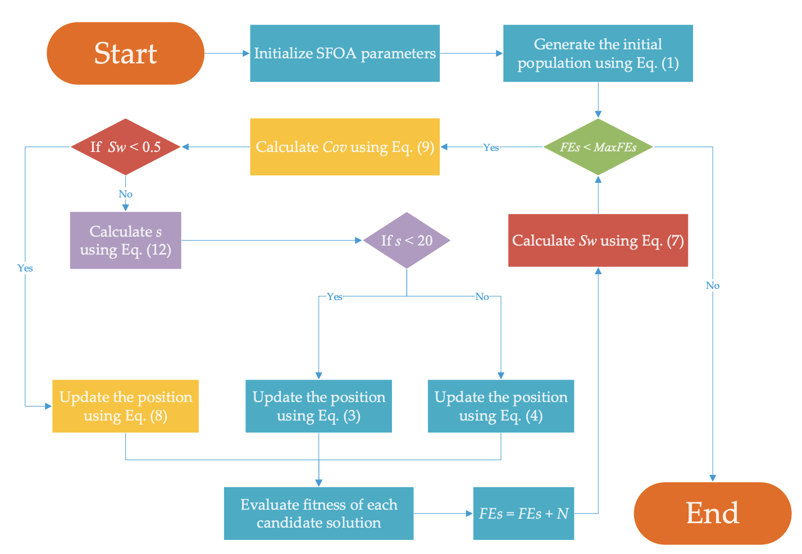
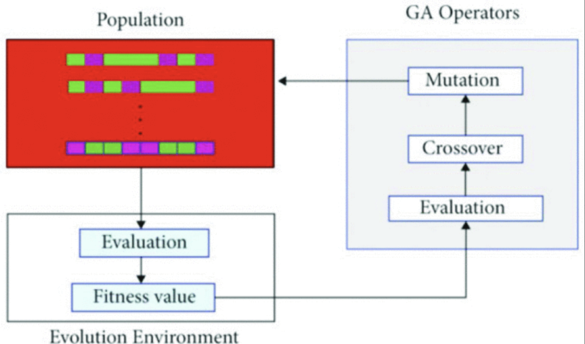

Tianzuo Yuan
Email: maxyuan0622@outlook.com | cc31642@um.edu.mo | cs25966@bristol.ac.uk Research Interests
Biomedical Imaging & Engineering • Computer Vision, Deep Learning & Machine Learning • Artificial Intelligence and Multi-agent LLMs • Multimodal Fusion & Bioinformatics Algorithms
|
I am an undergraduate student pursuing my BSc in Bioinformatics at the University of Macau, where I maintain a cumulative GPA of 3.48/4.0 (ranked top 15%). My research focuses on the intersection of artificial intelligence and biomedical applications, with particular expertise in deep learning, computer vision, and multimodal data fusion.
Education
- University of Macau (Macau, China) — BSc in Bioinformatics — 08/2023–08/2027 — GPA: 3.48/4.0 (Top 15%), Honours College GPA: 3.77/4.0
- University of California, Berkeley (CA, U.S.A.) — Visiting Student, Summer Program — 06/2024–08/2024 — Electives: Human Anatomy, Statistics & Probability, Cognitive Neuroscience
- University of Bristol (Bristol, U.K.) — Exchange Student — 01/2026–06/2026 — Electives: Data Science Perspectives, Evolutionary Genomics, Recombinant DNA Technology
Selected Publications
|

|
Intelligent Detection Model of Lung Nodules in Medical CT Images
7th International Conference on Electronics and Communication, Network and Computer Technology (ECNCT), Guangzhou, 2025. doi: 10.1109/ECNCT66493.2025.11172473 Best Oral Presentation Award • Excellent Young Scholar Award
|
|

|
A Novel Adaptive Superb Fairy-Wren Optimization Algorithm for Numerical Optimization Problems
Biomimetics (Q1, IF: 3.9), 2025. doi: 10.3390/biomimetics10080496
|
|

|
Multimodal Deep Learning Framework for Brain Tumor Segmentation Using CT and MRI Images
4th International Conference on Image Processing, Computer Vision and Machine Learning (ICICML), Chongqing, 2025. doi: 10.1109/ICICML67980.2025.11333677
|

|
MRI-based Artificial Intelligence in Predicting Prostate Cancer Biochemical Recurrence: A Systematic Review and Meta-Analysis
JMIR, under revision
|
|
|
A Lightweight, Deployable AI Agent for Cancer Care Navigation: A Data-Driven Approach for Regions with Unique Epidemiological Profiles
The 14th IEEE International Conference on Healthcare Informatics (ICHI 2026), under review
|
|
|
Adaptive Fusion Multi-Agent System for Gastric Cancer Detection: Theoretical Analysis with Excellent Cross-Domain Generalization
BSPC, under review
|
Research Experience

|
Pan-NEN Transcriptomic Atlas & AI Diagnostic System (NETA)
Established a comprehensive Pan-Neuroendocrine Tumor (Pan-NEN) Transcriptomic Atlas integrating 308 high-quality RNA-seq samples from 9 independent GEO datasets, covering NENs from four major organ sites (Lung, Pancreas, Prostate, Skin). Identified 3 robust molecular subtypes (C1: Immune-Hot, C2: Metabolic, C3: Neuronal) using Consensus Clustering. Developed an XGBoost-based AI diagnostic model with 100% training accuracy, featuring 50 signature genes selected via Boruta algorithm and SHAP interpretability. Characterized immune landscape via ssGSEA (28 immune cell types), predicted drug sensitivity, and validated prognostic markers using external TCGA-PCPG data. Built an interactive R Shiny web platform (NETA-Web) with modules for gene expression analysis, immune landscape profiling, drug sensitivity prediction, survival analysis, and AI-powered subtype diagnosis.
|

|
A Cross Deep Learning System for Rapid Automatic Diagnosis of Gastric Cancer from Real-Time Endoscopic Videos
Developed deep learning pipeline for early gastric cancer diagnosis from real-time endoscopic video, achieving high accuracy for stage detection. Developed hybrid AI model using VGG16 and XGBoost for multi-stage cancer detection, achieving high classification accuracy. Developed multimodal AI models combining imaging and clinical data for early cancer diagnosis, focusing on improving predictive performance with deep learning (05/2025–11/2025).
|
Internship Experience

|
Multi-Agent Systems & AI Framework Design
Contributed to design and implementation of multi-agent AI framework for smart cities, integrating NLP and decision-making systems. Developed a domain-specific language (DSL) framework for multi-agent coordination with React front-end and Python FastAPI backend, supporting 1000+ agents with <200ms response time.
|

|
Single Cell Data Analysis & Bioinformatics
Conducted RNA-seq and single-cell transcriptomic data analysis, including differential expression and cell clustering. Applied tools like Seurat and Scanpy for data preprocessing, visualization, and interpretation.
|
Awards & Honors
- Dean's Honor List, University of Macau, 2024–2025
- Bronze Medal, Kaggle RSNA Intracranial Aneurysm Detection, 2025
- Honours College Certificate Program, University of Macau, 2024–2025
- Best Oral Presentation, ECNCT 2025
- Excellent Young Scholar Award, ECNCT 2025
Skills
- Programming: Python, C++, MySQL, R, SPSS, MATLAB
- Deep Learning Frameworks: PyTorch, TensorFlow, Keras
- Tools: Git, Linux, Docker, Jupyter Notebooks
- Languages: English (TOEFL iBT 98), Mandarin, Cantonese (Basic)
Extracurricular Activities
- Member, Unmanned Technology Application Team, 08/2025–09/2025
- Minister, Publicity Department, IET Hong Kong Branch, 08/2024–12/2025
- Top 9 Finalist, Public Speaking & Leadership, University of Macau, 01/2024–12/2025